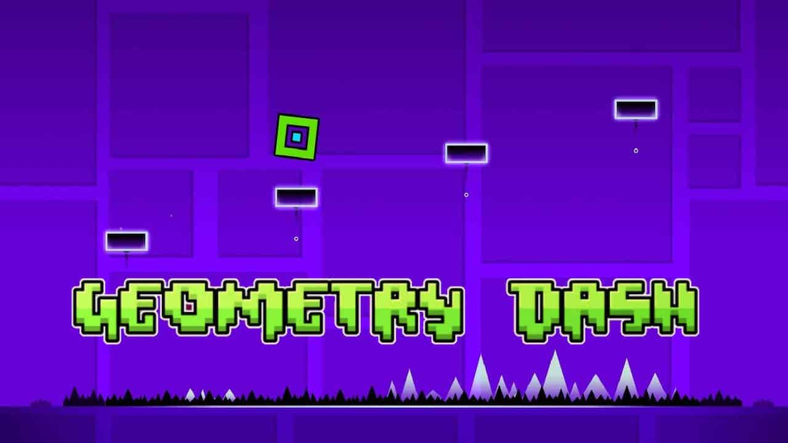

Back to Home
Geometry dash

Geometry Dash was created by Swedish video game developer Robert Nicholas Christian Topala (born 23 February 1987), known professionally as RobTop. On 6 June 2010, Topala created his first video game, Bounce Ball Thingy,
on Newgrounds, developing it while he was at university studying civil engineering. He later abandoned his course because he became more interested in the video game industry.
Geometry Dash consists of 26 full-length levels made by its developer; 22 are auto-scrolling, and 4 are 'platformer' levels.
There is also a short-length level called "The Challenge" that is unrelated to the other 26 levels. It has a level creation system,
where players can create their own custom levels, share them online and play levels designed by other players. In-game currency, such
as stars, moons, coins, mana orbs or diamonds, can be obtained from various sources, such as levels (both official and user-created) or chests.
Geometry Dash system requirements state that you will need at least 512 MB of RAM. You will need at least 100 MB of free space to install Geometry Dash.